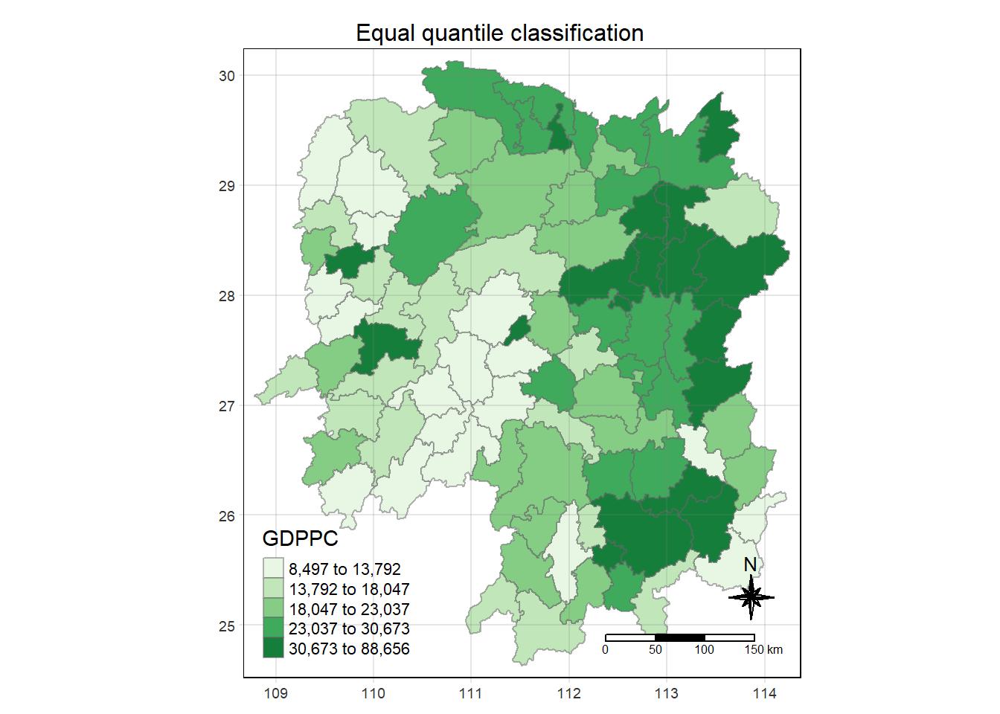

pacman::p_load(sf, sfdep, tmap, tidyverse)In class Exercise 5
1. Installing R Packages
2. The Data
- Hunan geospatial data in ESRI shapefile format
- Hunan_2012 attribute data in csv format
Importing geospatial data
hunan <- st_read(dsn = "data/geospatial",
layer = "Hunan")Reading layer `Hunan' from data source
`C:\viddyasri\IS415-GAA\In-class_Ex\In-class_Ex05\data\geospatial'
using driver `ESRI Shapefile'
Simple feature collection with 88 features and 7 fields
Geometry type: POLYGON
Dimension: XY
Bounding box: xmin: 108.7831 ymin: 24.6342 xmax: 114.2544 ymax: 30.12812
Geodetic CRS: WGS 84Importing aspatial data
hunan2012 <- read_csv("data/aspatial/Hunan_2012.csv")hunan_GDPPC <- read_csv("data/aspatial/Hunan_GDPPC.csv")Performing relational join
hunan_GDPPC <- left_join(hunan,hunan2012) %>%
select(1:4, 7, 15)Plotting a choropleth map
tmap_mode("plot")
tm_shape(hunan_GDPPC) +
tm_fill("GDPPC",
n = 5,
style = "quantile",
palette = "Greens") +
tm_borders(alpha = 0.5) +
tm_compass(type="8star", size = 2) +
tm_scale_bar() +
tm_layout(main.title = "Equal quantile classification",
main.title.size = 1,
main.title.position = "center",
frame = TRUE,
legend.height = 0.45,
legend.width = 0.35) +
tm_grid(alpha = 0.2)
3. Global Measures of Spatial Association
Derive contiguity weights with Queen’s method
wm_q <- hunan_GDPPC %>%
mutate(nb = st_contiguity(geometry),
wt = st_weights(nb,
style="W"),
.before = 1)Computing Global Moran’s I
moranI <- global_moran(wm_q$GDPPC,
wm_q$nb,
wm_q$wt)
glimpse(moranI)List of 2
$ I: num 0.301
$ K: num 7.64Performing Global Moran’s I permutation test
set.seed(1234)global_moran_perm(wm_q$GDPPC,
wm_q$nb,
wm_q$wt,
nsim = 99)
Monte-Carlo simulation of Moran I
data: x
weights: listw
number of simulations + 1: 100
statistic = 0.30075, observed rank = 100, p-value < 2.2e-16
alternative hypothesis: two.sidedP-value is smaller than alpha value of 0.05. Hence, we have enough statistical evidence to reject the null hypothesis.
Computing Local Moran’s I
lisa <- wm_q %>%
mutate(local_moran = local_moran(
GDPPC, nb, wt, nsim = 99),
.before = 1) %>%
unnest(local_moran)Visuaising local Moran’s I and p-value
tmap_mode("plot")
map1 <- tm_shape(lisa) +
tm_fill("ii") +
tm_borders(alpha = 0.5) +
tm_view(set.zoom.limits = c(6,8)) +
tm_layout(main.title = "local Moran's I of GDPPC",
main.title.size = 0.8)
map2 <- tm_shape(lisa) +
tm_fill("p_ii",
breaks = c(0, 0.001, 0.01, 0.05, 1),
labels = c("0.001", "0.01", "0.05", "Not sig")) +
tm_borders(alpha = 0.5) +
tm_layout(main.title = "p-value of local Moran's I",
main.title.size = 0.8)
tmap_arrange(map1, map2, ncol = 2)
Visualising LISA map
lisa_sig <- lisa %>%
filter(p_ii < 0.05)
tmap_mode("plot")
tm_shape(lisa) +
tm_polygons() +
tm_borders(alpha = 0.5) +
tm_shape(lisa_sig) +
tm_fill("mean") +
tm_borders(alpha = 0.4)
4. Hot Spot and Cold Spot Area Analysis (HCSA)
Computing local Gi* statistics
wm_idw <- hunan_GDPPC %>%
mutate(nb = st_contiguity(geometry),
wts = st_inverse_distance(nb, geometry,
scale = 1,
alpha = 1),
.before = 1)HCSA <- wm_idw %>%
mutate(local_Gi = local_gstar_perm(
GDPPC, nb, wt, nsim = 99),
.before = 1) %>%
unnest(local_Gi)
HCSASimple feature collection with 88 features and 16 fields
Geometry type: POLYGON
Dimension: XY
Bounding box: xmin: 108.7831 ymin: 24.6342 xmax: 114.2544 ymax: 30.12812
Geodetic CRS: WGS 84
# A tibble: 88 × 17
gi_star e_gi var_gi p_value p_sim p_folded_sim skewness kurtosis nb
<dbl> <dbl> <dbl> <dbl> <dbl> <dbl> <dbl> <dbl> <nb>
1 0.0416 0.0114 6.41e-6 0.0493 9.61e-1 0.7 0.35 0.875 <int>
2 -0.333 0.0106 3.84e-6 -0.0941 9.25e-1 1 0.5 0.661 <int>
3 0.281 0.0126 7.51e-6 -0.151 8.80e-1 0.9 0.45 0.640 <int>
4 0.411 0.0118 9.22e-6 0.264 7.92e-1 0.6 0.3 0.853 <int>
5 0.387 0.0115 9.56e-6 0.339 7.34e-1 0.62 0.31 1.07 <int>
6 -0.368 0.0118 5.91e-6 -0.583 5.60e-1 0.72 0.36 0.594 <int>
7 3.56 0.0151 7.31e-6 2.61 9.01e-3 0.06 0.03 1.09 <int>
8 2.52 0.0136 6.14e-6 1.49 1.35e-1 0.2 0.1 1.12 <int>
9 4.56 0.0144 5.84e-6 3.53 4.17e-4 0.04 0.02 1.23 <int>
10 1.16 0.0104 3.70e-6 1.82 6.86e-2 0.12 0.06 0.416 <int>
# ℹ 78 more rows
# ℹ 8 more variables: wts <list>, NAME_2 <chr>, ID_3 <int>, NAME_3 <chr>,
# ENGTYPE_3 <chr>, County <chr>, GDPPC <dbl>, geometry <POLYGON [°]>Visualising Gi* and p-value of HCSA
tmap_mode("plot")
map1 <- tm_shape(HCSA) +
tm_fill("gi_star") +
tm_borders(alpha = 0.5) +
tm_view(set.zoom.limits = c(6,8)) +
tm_layout(main.title = "Gi* of GDPPC",
main.title.size = 0.8)
map2 <- tm_shape(HCSA) +
tm_fill("p_value",
breaks = c(0, 0.001, 0.01, 0.05, 1),
labels = c("0.001", "0.01", "0.05", "Not sig")) +
tm_borders(alpha = 0.5) +
tm_layout(main.title = "p-value of Gi*",
main.title.size = 0.8)
tmap_arrange(map1, map2, ncol = 2)
Visualising hot spot and cold spot areas
HCSA_sig <- HCSA %>%
filter(p_sim < 0.05)
tmap_mode("plot")
tm_shape(HCSA) +
tm_polygons() +
tm_borders(alpha = 0.5) +
tm_shape(HCSA_sig) +
tm_fill("gi_star") +
tm_borders(alpha = 0.4)